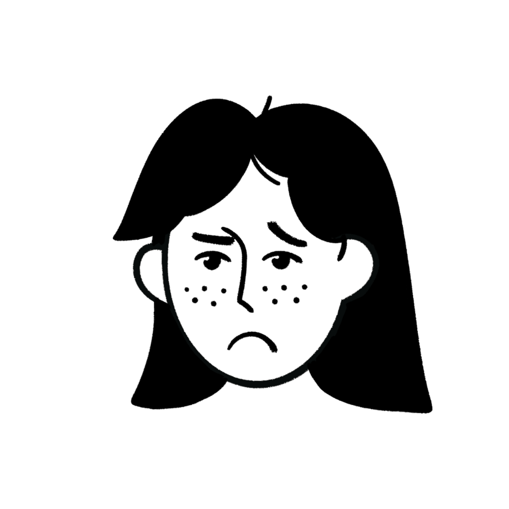
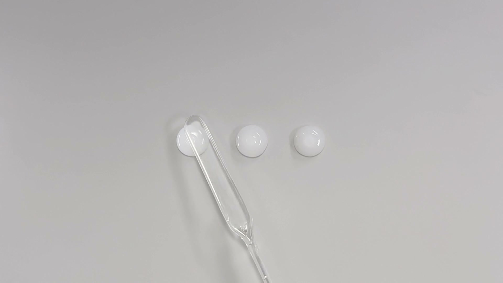
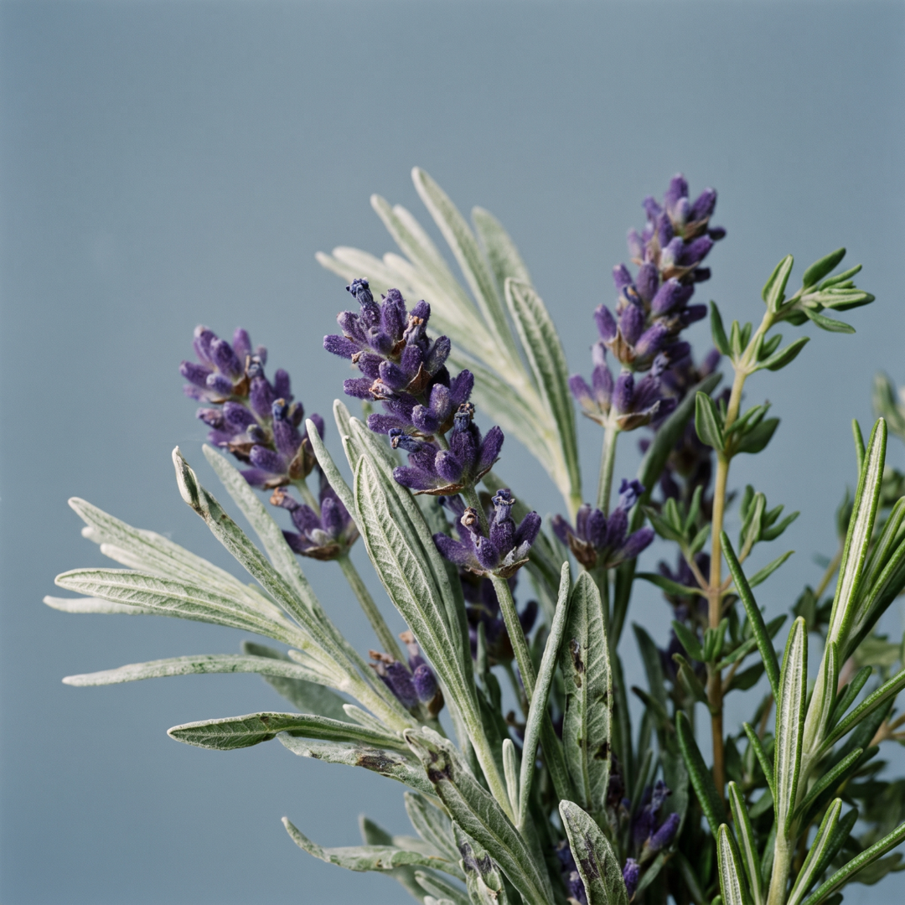
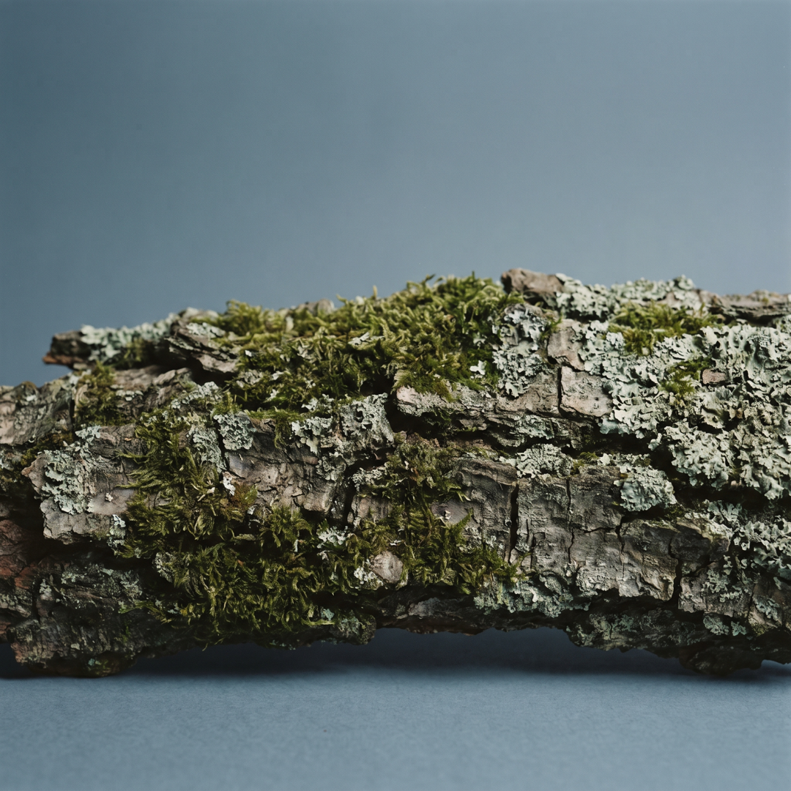
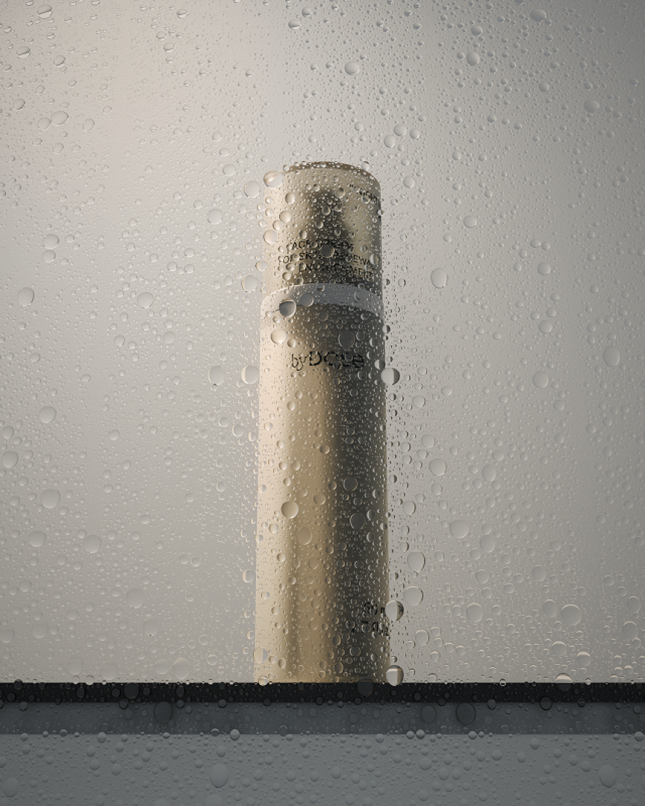
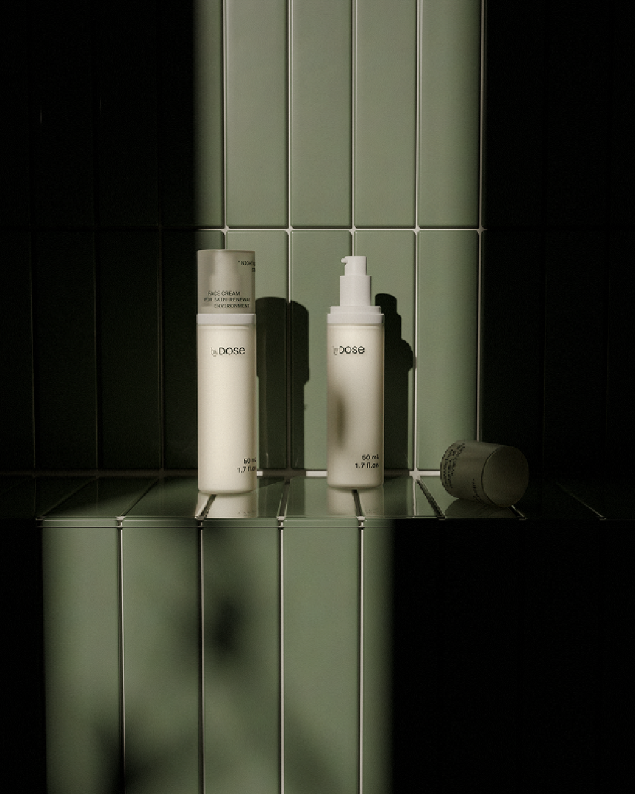
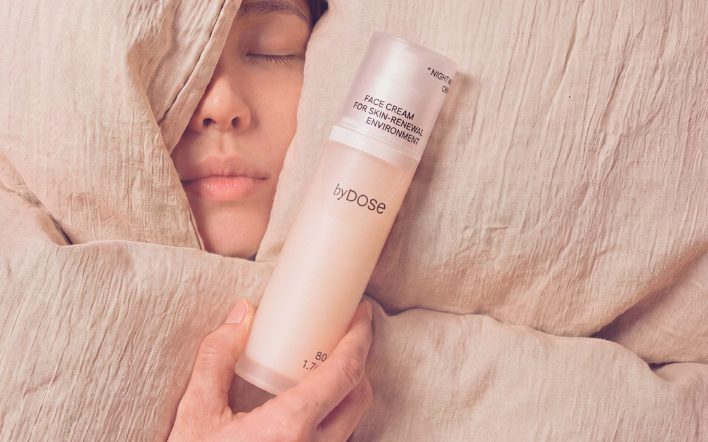

수부지, 아침에 본 거울이 만족스럽지 못한 분들,
화장이 뜨고 잘 안 먹는 분들, 피부가 버석한 분 이라면 나잇나잇 앞으로 모여보세요!
클로이 (29세)
나는 수부지라, 나이트 크림은 좀 무겁고 번들 거릴 거 같아...
미아 (27세)
나는 아침마다 얼굴이 너무 당겨...
노아 (32세)
하루종일 히터 바람에 얼굴이 버석해...

엠마 (33세)
분명 오래 잤는데 왜 때문에 피곤해 보이지??
루시 (27세)
또. 또. 또 뜨네. 오늘도 화장이 안먹어..!
굿나잇 시퀀스™
잠든 사이 피부가 회복하기 좋은 환경을 위한 설계.
가볍게 바르고, 밤새 채우고, 지켜서 촉촉한 아침을 맞이하세요.

클로이
나는 수부지라, 나이트 크림은 좀 무겁고 번들 거릴 거 같아...
부드러운 젤-크림 제형
편안한 밤을 위해 필요한 가벼움만 담았습니다.
촉촉함은 두껍고 무거운 것으로 채우는 게 아니거든요.
가벼운 젤-크림이 부드럽게 발리고, 번들거림이나 답답함 없이도 촉촉하면서도 산뜻하게 흡수됩니다.
youm****
밤에 바르고 잠들어도 오전까지 촉촉한 느낌이에요.
야외 활동이 잦은데, 덕분에 피부가 당기지 않게 되어서 너무 좋아요!
「아로마 웰니스」
차분한 마음은 ‘좋은 잠’을, 좋은 잠은 ‘좋은 피부’를 만든다는 믿음으로, 나잇나잇 크림은 좋은 향을 넘어, 잠들기 전 심리 상태를 고려한 향을 담았습니다.
향과 감정의 연결을 연구하는 CPL Aromas의 「아로마 웰니스」 라인을 활용해 조향된 슬립 인 더포레스트 향.
비 갠 직후 숲속을 걷는 듯, 촉촉하면서도 포근한 향을 느껴보세요.

Herbal
라벤더 줄기를 손 끝에 문지른듯
싱그러운 허브
Earthy
비에 젖은 흙에서 느껴지는
짙은 대지의 내음

Woody
이끼 낀 나무 껍질의
깊고 차분한 결
상쾌하고 시원하게 시작합니다
TOP | 라벤더라빈 · 베르가못 · 오렌지 · 자몽 · 클라리 세이지
은은하고 부드럽게 이어집니다
MIDDLE | 자스민 · 라벤더 · 로즈마리 · 네롤리 · 핑크 페퍼
깊고 차분하게 남습니다
BASE | 머스크 · 엠버 · 시더우드 · 베티버 · 페출리아 · 톤카

미아
나는 아침마다 얼굴이 너무 당겨
수분 채우기
밤사이 수분이 부족해지면, 아침 피부가 당기고 건조하게 느껴집니다.
히알루론산 5종과 AQUAXYL™의 조합으로, 수분을 채우고 순환시키세요.
크기와 형태가 다른 히알루론산 5종이 수분을 겹겹이 붙잡아 채우면, AQUAXYL™이 피부의 수분 통로를 따라 수분이 고르게 오가도록 돕습니다.
한 번 발라도 촉촉함이 오래가도록 설계했습니다.
물을 붙잡는 기본 형태에
잘게 분해한 형태, 그물처럼 연결한 형태까지.
구조가 다른 5종 히알루론산이
물 분자를 끌어당겨 붙잡고,
피부 표면에 촉촉한 보습막을 형성해
메마른 피부 구석구석 수분을 가득 채워줍니다.
자일리톨 계열의 3종 보습 복합체로
피부의 수분 통로인 아쿠아포린-3에 작용해
수분 이동을 돕고, 피부가 수분을 머금을 수 있게 해줍니다.
수분이 오가는 길부터, 수분을 간직하는 힘까지.
잠든 사이 촉촉함을 놓치지 마세요.

노아
하루종일 히터 바람에 얼굴이 버석해...
피부 보호하기
바깥 환경에 지친 피부는, 수분도 쉽게 잃기 마련이죠.
채운 수분을 놓치지 않도록, 엑토인과 세라마이드 5종이 막아섭니다.
엑토인이 피부 수분층을 만들어 건조함과 외부 스트레스로부터 지키고, 세라마이드 5종은 장벽의 틈을 촘촘히 메워 수분이 빠져나가는 길을 줄입니다. 무너진 보습 장벽을 케어해, 채운 수분을 아침까지 지켜주세요.
사막이나 소금호수 같은 극한 환경에 사는 미생물이
스스로를 보호하기 위해 만들어내는 천연 물질입니다.
주변의 물 분자와 상호작용해 수분층을 형성하고,
건조함과 외부 스트레스로부터 피부를 지켜줍니다.
가득 채운 수분을 쉽게 잃지 않도록,
엑토인이 밤사이 촉촉함을 보호해 줍니다.
피부 장벽을 구성하는 여러 종류의 세라마이드.
5종 세라마이드로 장벽에 필요한 지질을 보충해,
각질세포 사이를 촘촘하게 메워줍니다.
탄탄하게 세워진 장벽이 수분의 손실을 줄이고,
외부 자극에도 쉽게 흔들리지 않게 도와줍니다.
엠마 (33세)
분명 오래 잤는데 왜 때문에 피곤해 보이지??
루시 (27세)
또. 또. 또 뜨네. 오늘도 화장이 안먹어..!
피부 컨디셔닝
수분만으로는 채울 수 없는 빈자리, 두 가지 발효 성분이 채웁니다.
아미노산·유기산·비타민·미네랄·다당류 등 다양한 발효 유래 성분으로 하루 동안 지친 피부에 영양을 더하고, 각질층이 수분을 머금도록 도와 피부결을 정돈해 줍니다. 잘 잔 만큼, 맑은 피부결로 아침을 시작하세요.
유익균으로 알려진 비피다균을 발효해 얻은 성분으로,
아미노산·유기산·다당류 등
다양한 발효 유래 성분을 담고 있습니다.
하루 동안 지친 피부에 영양을 더해,
밤사이 편안한 피부 컨디션을
유지하도록 도와줍니다.
아미노산·유기산·비타민·미네랄 등
다양한 성분을 담은 발효여과물입니다.
이 중 아미노산은 각질층이 수분을 머금도록 돕고
거칠어진 피부결을 매끄럽게 정돈해 줍니다.
아침마다 푸석해 보이던 피부를
촉촉하고 맑게 가꿔주세요.

mic****
자기 전에 발라두면 다음 날 아침까지 촉촉함이 남아있어서 좋아요.
chae****
산뜻한 버터(?)를 바르는 것처럼 너무 부드럽게 발리면서도 속은 촉촉하고 보송한 느낌으로 마무리가 됩니다.
jake****
자기 전에 바르면 산뜻하게 스며들어서 더운 날씨에도 부담없이 쓸 수 있었어요.
skeb****
보통 나이트 크림은 리치하고 무거운 제형이 많은데, 이건 가벼운데 발림성도 좋고 촉촉해서 부담없이 바르고 잘 수 있어요!
sixb****
나이트 크림이라고 믿을 수 없을 정도로 가볍고 산뜻합니다! 하지만 매우 촉촉하게 남는다는 느낌이었습니다.
youm****
밤에 바르고 잠들어도 오전까지 촉촉한 느낌이에요. 하루종일 야외활동이 잦은데, 덕분에 피부가 당기지 않게 되어서 너무 좋아요!
daso****
45년째 건조한 피부로 살고있는데요 아직도 제 건조함을 채워줄 화장품을 못찾았었는데 이건 좀 다르네요~
hhj1****
사용해보니 밤사이 피부를 촉촉하게 유지해 주는 느낌입니다. 아침에 일어나면 피부결도 한층 부드러워 보여 만족하며 사용하고 있습니다
How to use
적당량을 손에 덜어, 마사지하듯 얼굴에 부드럽게 바릅니다.
Product Information
정제수, 글리세린, 2,3-부탄다이올, 글리세레스-26, 다이프로필렌글라이콜, 글리세릴폴리아크릴레이트, 다이에톡시에틸석시네이트, 카프릴릭/카프릭트라이글리세라이드, 자일리톨, 자일리틸글루코사이드, 무수자일리톨, 하이드로제네이티드레시틴, 글라이코스핑고리피드, 헥실라우레이트, 소듐피씨에이, 글루타믹애씨드, 1,2-헥산다이올, 부틸렌글라이콜, 프로판다이올, 글리세릴스테아레이트에스이, 소듐하이알루로네이트, 세라마이드이오피, 세라마이드엔에스, 세라마이드엔피, 세라마이드에이에스, 세라마이드에이피, 피토스핑고신, 콜레스테롤, 세테아릴알코올, 스테아릭애씨드, 하이알루로닉애씨드, 갈락토미세스발효여과물, 비피다발효여과물, 펜틸렌글라이콜, 트로메타민, 엑토인, 하이드롤라이즈드콜라겐, 메도우폼씨오일, 다이소듐이디티에이, 소듐하이알루로네이트크로스폴리머, 하이드록시프로필트라이모늄하이알루로네이트, 하이드롤라이즈드하이알루로닉애씨드, 향료, 시트릭애씨드, 호호바씨오일, 에틸헥실글리세린, 카프릴릴글라이콜